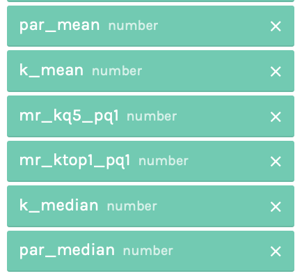
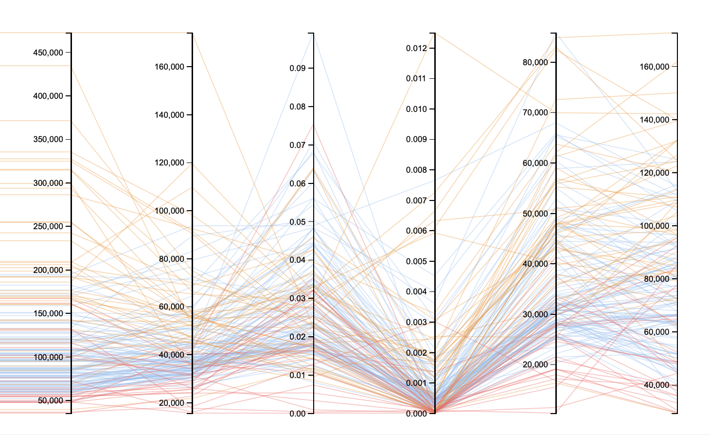

Parallel Coordinate Visualization
Distribution of mobility rate among public and private colleges
Data
In this visualization, 6 of the columns are used:
- par_mean: Mean parental income
- k_mean: Mean kid earnings
- mr_kq5_pq1: Mobility rate (joint probability of parents in bottom quintile and child in top quintile of the income distribution)
- mr_ktop1_pq1: Upper-tail mobility rate (joint probability of parents in bottom quintile and child in top 1% of the income distribution)
- k_median: Median child individual earnings in 2014 (rounded to the nearest $100)
- par_median: Median parent household income (rounded to nearest $100)
Wrangling
This dataset was filtered (with filter function in GoogleSheets) by "state" column and only showed the data in CA (California).
Visualizations
Prototype in RAWGraphs:

Color represents the "type" of each college(blue for "public", orange for "private non-profit" and red for "for-profit")

_______par-mean______________k-mean_____________mobility-rate_______mobility-rate(to-top1%)_______k-median____________par-median___
Note: since (it happends most of the time) on RAWGraphs, the numbers on left-most axis would be cut-off and only showing partial numbers,
the table was added with a "buffer" column to the left of the real first column axis, so that the numbers could show completely.
Also the labels for column axis would not show with RAWGraphs generator, thus the input data-adding stack on the website is provided for the sequence of columns.
D3 version:
- par_mean: Mean parental income
- k_mean: Mean kid earnings
- mr_kq5_pq1: Mobility rate (joint probability of parents in bottom quintile and child in top quintile of the income distribution)
- mr_ktop1_pq1: Upper-tail mobility rate (joint probability of parents in bottom quintile and child in top 1% of the income distribution)
- k_median: Median child individual earnings in 2014 (rounded to the nearest $100)
- par_median: Median parent household income (rounded to nearest $100)
Writeup
Among the 6 axis in the graph. the 3rd and 4th axis are mobility rates(in different scales though). Whether dear readers read the axis from left to middle or from right to middle,
you would see parents' income -> kids' income -> the mobility rate. This shows how the income between generations change and in which direction it is causing a high mobility rate.
From the color, we could see that mobility rate of public colleges are concentrating and mostly lower than that of the private non-profit colleges.
Between the "top 20% kids-bottom 20% parents mobility rate axis" and "top 1% kids-bottom 20% parents mobility rate axis", there are huge declines.
Also the latter has much more concentrated data in extremely small values.
It seems that transition of income from bottom quintile to top quintile is still possible and happening, but from bottom 20% to top %1 income is really difficult and uncommon.